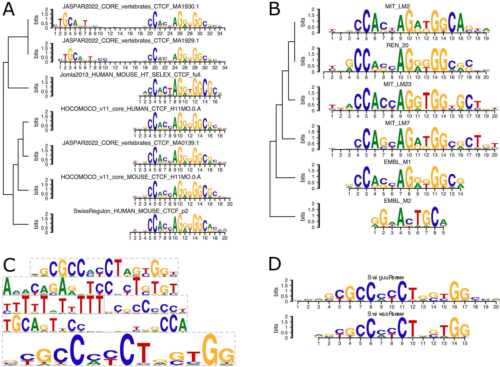

CTCF introduction
Mikhail Dozmorov
Virginia Commonwealth Universitymikhail.dozmorov@gmail.com
6 November 2022
Source:vignettes/CTCF.Rmd
CTCF.RmdCTCF

CTCF defines an AnnotationHub resource representing genomic coordinates of FIMO-predicted CTCF binding sites for human and mouse genomes, including the Telomere-to-Telomere and mm39 genome assemblies. It also includes experimentally defined CTCF-bound cis-regulatory elements from ENCODE SCREEN.
TL;DR - for human hg38 genome assembly, use
hg38.MA0139.1.RData (“AH104729”). For mouse mm10 genome
assembly, use mm10.MA0139.1.RData (“AH104755”). For ENCODE SCREEN data, use
hg38.SCREEN.GRCh38_CTCF.RData (“AH104730”) or
mm10.SCREEN.mm10_CTCF.RData (“AH104756”) objects.
The CTCF GRanges are named as
<assembly>.<Database>. The FIMO-predicted data
includes extra columns with motif name, score, p-value, q-value, and the
motif sequence.
Installation instructions
Install the latest release of R, then get the latest version of Bioconductor by starting R and entering the commands:
# if (!require("BiocManager", quietly = TRUE))
# install.packages("BiocManager")
# BiocManager::install(version = "3.16")Then, install additional packages using the following code:
# BiocManager::install("AnnotationHub", update = FALSE)
# BiocManager::install("GenomicRanges", update = FALSE)
# BiocManager::install("plyranges", update = FALSE)Example
suppressMessages(library(AnnotationHub))
ah <- AnnotationHub()
#> snapshotDate(): 2022-10-26
query_data <- subset(ah, preparerclass == "CTCF")
# Explore the AnnotationHub object
query_data
#> AnnotationHub with 51 records
#> # snapshotDate(): 2022-10-26
#> # $dataprovider: JASPAR 2022, CTCFBSDB 2.0, SwissRegulon, Jolma 2013, HOCOMO...
#> # $species: Homo sapiens, Mus musculus
#> # $rdataclass: GRanges
#> # additional mcols(): taxonomyid, genome, description,
#> # coordinate_1_based, maintainer, rdatadateadded, preparerclass, tags,
#> # rdatapath, sourceurl, sourcetype
#> # retrieve records with, e.g., 'object[["AH104716"]]'
#>
#> title
#> AH104716 | T2T.CIS_BP_2.00_Homo_sapiens.RData
#> AH104717 | T2T.CTCFBSDB_PWM.RData
#> AH104718 | T2T.HOCOMOCOv11_core_HUMAN_mono_meme_format.RData
#> AH104719 | T2T.JASPAR2022_CORE_vertebrates_non_redundant_v2.RData
#> AH104720 | T2T.Jolma2013.RData
#> ... ...
#> AH104762 | mm9.JASPAR2022_CORE_vertebrates_non_redundant_v2.RData
#> AH104763 | mm9.Jolma2013.RData
#> AH104764 | mm9.MA0139.1.RData
#> AH104765 | mm9.SwissRegulon_human_and_mouse.RData
#> AH104766 | mm8.CTCFBSDB.CTCF_predicted_mouse.RData
# Get the list of data providers
query_data$dataprovider %>% unique()
#> [1] "CIS-BP" "CTCFBSDB 2.0" "HOCOMOCO v11" "JASPAR 2022"
#> [5] "Jolma 2013" "SwissRegulon" "ENCODE SCREEN v3"We can find CTCF sites identified using JASPAR 2022 database in hg38 human genome
subset(query_data, species == "Homo sapiens" &
genome == "hg38" &
dataprovider == "JASPAR 2022")
#> AnnotationHub with 2 records
#> # snapshotDate(): 2022-10-26
#> # $dataprovider: JASPAR 2022
#> # $species: Homo sapiens
#> # $rdataclass: GRanges
#> # additional mcols(): taxonomyid, genome, description,
#> # coordinate_1_based, maintainer, rdatadateadded, preparerclass, tags,
#> # rdatapath, sourceurl, sourcetype
#> # retrieve records with, e.g., 'object[["AH104727"]]'
#>
#> title
#> AH104727 | hg38.JASPAR2022_CORE_vertebrates_non_redundant_v2.RData
#> AH104729 | hg38.MA0139.1.RData
# Same for mm10 mouse genome
# subset(query_data, species == "Mus musculus" & genome == "mm10" & dataprovider == "JASPAR 2022")The hg38.JASPAR2022_CORE_vertebrates_non_redundant_v2
object contains CTCF sites detected using the all
three CTCF PWMs. To retrieve, we’ll use:
# hg38.JASPAR2022_CORE_vertebrates_non_redundant_v2
CTCF_hg38_all <- query_data[["AH104727"]]
#> loading from cache
#> require("GenomicRanges")
CTCF_hg38_all
#> GRanges object with 3093041 ranges and 5 metadata columns:
#> seqnames ranges strand | name
#> <Rle> <IRanges> <Rle> | <character>
#> [1] chr1 11212-11246 + | JASPAR2022_CORE_vert..
#> [2] chr1 11399-11432 + | JASPAR2022_CORE_vert..
#> [3] chr1 11414-11432 + | JASPAR2022_CORE_vert..
#> [4] chr1 12373-12406 + | JASPAR2022_CORE_vert..
#> [5] chr1 13507-13541 + | JASPAR2022_CORE_vert..
#> ... ... ... ... . ...
#> [3093037] chrY 57215115-57215148 - | JASPAR2022_CORE_vert..
#> [3093038] chrY 57215146-57215164 - | JASPAR2022_CORE_vert..
#> [3093039] chrY 57215146-57215179 - | JASPAR2022_CORE_vert..
#> [3093040] chrY 57215332-57215366 - | JASPAR2022_CORE_vert..
#> [3093041] chrY 57216319-57216352 - | JASPAR2022_CORE_vert..
#> score pvalue qvalue sequence
#> <numeric> <numeric> <numeric> <character>
#> [1] 7.77064 5.25e-05 0.459 gtgctgtgccagggcgcccc..
#> [2] 18.48780 2.54e-07 0.118 cagcacgcccacctgctggc..
#> [3] 9.11475 5.65e-05 0.555 ctggcagctggggacactg
#> [4] 9.21951 5.25e-05 0.421 CAGCAGGTCTGGCTTTGGCC..
#> [5] 9.71560 2.24e-05 0.397 GTGCCCTTCCTTTGCTCTGC..
#> ... ... ... ... ...
#> [3093037] 8.06504 9.11e-05 0.614 CTGCTGGGCCCTCTTGCTCC..
#> [3093038] 9.11475 5.65e-05 0.726 CTGGCAGCTGGGGACACTG
#> [3093039] 17.91870 3.72e-07 0.246 CAGCACGCCCGCCTGCTGGC..
#> [3093040] 7.77064 5.25e-05 0.584 GTGCTGTGCCAGGGCGCCCC..
#> [3093041] 8.63415 6.96e-05 0.595 CTGCATTTGCGTTCCGACGC..
#> -------
#> seqinfo: 24 sequences from hg38 genomeThe hg38.MA0139.1 object contains CTCF sites detected
using the most popular MA0139.1 CTCF
PWM. To retrieve:
# hg38.MA0139.1
CTCF_hg38 <- query_data[["AH104729"]]
#> loading from cache
CTCF_hg38
#> GRanges object with 887980 ranges and 5 metadata columns:
#> seqnames ranges strand | name score pvalue
#> <Rle> <IRanges> <Rle> | <character> <numeric> <numeric>
#> [1] chr1 11414-11432 + | MA0139.1 9.11475 5.65e-05
#> [2] chr1 14316-14334 + | MA0139.1 7.83607 9.71e-05
#> [3] chr1 15439-15457 + | MA0139.1 8.00000 9.08e-05
#> [4] chr1 16603-16621 + | MA0139.1 8.04918 8.89e-05
#> [5] chr1 16651-16669 + | MA0139.1 11.42620 1.97e-05
#> ... ... ... ... . ... ... ...
#> [887976] chrY 57209918-57209936 - | MA0139.1 11.42620 1.97e-05
#> [887977] chrY 57209966-57209984 - | MA0139.1 8.04918 8.89e-05
#> [887978] chrY 57211133-57211151 - | MA0139.1 8.00000 9.08e-05
#> [887979] chrY 57212256-57212274 - | MA0139.1 7.83607 9.71e-05
#> [887980] chrY 57215146-57215164 - | MA0139.1 9.11475 5.65e-05
#> qvalue sequence
#> <numeric> <character>
#> [1] 0.555 ctggcagctggggacactg
#> [2] 0.601 GGACCAACAGGGGCAGGAG
#> [3] 0.599 TAGCCTCCAGAGGCCTCAG
#> [4] 0.597 CCACCTGAAGGAGACGCGC
#> [5] 0.504 TGGCCTACAGGGGCCGCGG
#> ... ... ...
#> [887976] 0.648 TGGCCTACAGGGGCCGCGG
#> [887977] 0.770 CCACCTGAAGGAGACGCGC
#> [887978] 0.770 TAGCCTCCAGAGGCCTCAG
#> [887979] 0.770 GGACCAACAGGGGCAGGAG
#> [887980] 0.726 CTGGCAGCTGGGGACACTG
#> -------
#> seqinfo: 24 sequences from hg38 genomeIt is always advisable to sort GRanges objects and keep standard chromsomes:
suppressMessages(library(plyranges))
CTCF_hg38_all <- CTCF_hg38_all %>% keepStandardChromosomes() %>% sort()
CTCF_hg38 <- CTCF_hg38 %>% keepStandardChromosomes() %>% sort()Save the data in a BED file, if needed.
# Note that rtracklayer::import and rtracklayer::export perform unexplained
# start coordinate conversion, likely related to 0- and 1-based coordinate
# system. We recommend converting GRanges to a data frame and save tab-separated
write.table(as.data.frame(CTCF_hg38),
file = "CTCF_hg38.bed",
sep = "\t", row.names = FALSE, col.names = FALSE, quote = FALSE)Note that the FIMO tool detects CTCF binding sites using the 1e-4 p-value threshold by default (the more significant p-value corresponds to the more confidently detected CTCF motif). We found that this threshold may be too permissive. Using the ENCODE SCREEN database as ground truth, we found 1e-6 as the optimal threshold providing approximately 80% true positive rate. However, less significant CTCF motifs may be cell type-specific or have weaker CTCF binding and therefore be missed by conventional peak callers. If cell type-specific CTCF binding is of interest, we recommend exploring less significant CTCF sites.

To filter the GRanges object and keep high-confidence CTCF sites, use:
# Check length before filtering
print(paste("Number of CTCF motifs at the default 1e-4 threshold:", length(CTCF_hg38)))
#> [1] "Number of CTCF motifs at the default 1e-4 threshold: 887980"
# Filter and check length after filtering
CTCF_hg38_filtered <- CTCF_hg38 %>% plyranges::filter(pvalue < 1e-6)
print(paste("Number of CTCF motifs at the 1e-6 threshold:", length(CTCF_hg38_filtered)))
#> [1] "Number of CTCF motifs at the 1e-6 threshold: 21671"
# Similarly, filter
CTCF_hg38_all_filtered <- CTCF_hg38_all %>% plyranges::filter(pvalue < 1e-6)Given some databases provide multiple CTCF PWMs, one CTCF site may be
detected multiple times resulting in overlapping CTCF sites. For
example, the proportion of overlapping CTCF sites in the
CTCF_hg38_all_filtered object containing CTCF sites
detected by three matrices nearly 40%:
# Proportion of overlapping enrtries
tmp <- findOverlaps(CTCF_hg38_all, CTCF_hg38_all)
prop_overlap <- sort(table(queryHits(tmp)) %>% table(), decreasing = TRUE)
sum(prop_overlap[which(names(prop_overlap) != "1")]) / length(CTCF_hg38_all)
#> [1] 0.375093The proportion of overlapping CTCF sites in the
CTCF_hg38_filtered object containing CTCF sites detected by
the MA0139.1
matrix is less than 2.5%
tmp <- findOverlaps(CTCF_hg38, CTCF_hg38)
prop_overlap <- sort(table(queryHits(tmp)) %>% table(), decreasing = TRUE)
sum(prop_overlap[which(names(prop_overlap) != "1")]) / length(CTCF_hg38)
#> [1] 0.0233485Reducing them (merging overlapping CTCF sites), combined with 1E-6 cutoff filtering, yields the number of CTCF sites comparable to previously reported.
print(paste("Number of CTCF_hg38 motifs at the 1e-6 threshold AND reduced:", length(CTCF_hg38_filtered %>% reduce())))
#> [1] "Number of CTCF_hg38 motifs at the 1e-6 threshold AND reduced: 21652"
print(paste("Number of CTCF_hg38_all motifs at the 1e-6 threshold AND reduced:", length(CTCF_hg38_all_filtered %>% reduce())))
#> [1] "Number of CTCF_hg38_all motifs at the 1e-6 threshold AND reduced: 63572"However, regulatory elements with CTCF proteins co-occupying adjacent/overlapping CTCF binding motifs were shown to be functionally and structurally different from those with single CTCF motifs. We provide non-reduced CTCF data and advise considering overlap of CTCF sites depending on the study’s goal.
liftOver of CTCF coordinates
As genome assemblies for model organisms continue to improve, CTCF sites for previous genome assemblies become obsolete. Typically, the actual genome sequence changes little, leading to changes in genomic coordinates. The liftOver method allows for conversion of genomic coordinates between genome assemblies.
Some carefully curated CTCF sites are available only for older genome assemblies. Examples include the data from CTCFBSDB, available for hg18 and mm8 genome assemblies.
To investigate whether liftOver of CTCF sites from older genome assemblies is a viable option, we tested for overlap between CTCF sites directly detected in specific genome assemblies with those lifted over. We detected CTCF sites using the MA0139.1 PWM from JASPAR 2022 database in hg18, hg19, hg38, and T2T genome assemblies and converted their genomic coordinates using the corresponding liftOver chains (download_liftOver.sh and convert_liftOver.sh scripts). We observed high Jaccard overlap among CTCF sites detected in the original genome assemblies or lifted over.
Jaccard overlaps among CTCF binding sites detected in the original and liftOver human genome assemblies. CTCF sites were detected using JASPAR 2022 MA0139.1 PWM. The correlogram was clustered using Euclidean distance and Ward.D clustering . White-red gradient indicate low-to-high Jaccard overlaps. Jaccard values are shown in the corresponding cells.
Our results suggest that liftOver is a viable alternative to obtain CTCF genomic annotations for different genome assemblies. We provide CTCFBSDB data converted to hg19 and hg38 genome assemblies.
CTCF Position Weight Matrices
CTCF PWM information. “Motif” - individual motif IDs or the total number of motifs per database; “Length” - motif length of the range of lengths; “URL” - direct links to motif pages. Jaspar, Hocomoco, Jolma 2013 PWMs were downloaded from the MEME database.
| Motif | Length..bp. | URL |
|---|---|---|
| Jaspar2022 | ||
| MA0139.1 | 19 | https://jaspar2022.genereg.net/matrix/MA0139.1 |
| MA1929.1 | 34 | http://jaspar2022.genereg.net/matrix/MA1929.1 |
| MA1930.1 | 35 | http://jaspar2022.genereg.net/matrix/MA1930.1 |
| HOCOMOCO v11 | ||
| CTCF_HUMAN.H11MO.0.A | 19 | http://hocomoco.autosome.ru/motif/CTCF_HUMAN.H11MO.0.A |
| CTCF_MOUSE.H11MO.0.A | 20 | http://hocomoco.autosome.ru/motif/CTCF_MOUSE.H11MO.0.A |
| SwissRegulon | ||
| CTCF.p2 | 20 | https://swissregulon.unibas.ch/wm/?wm=CTCF.p2&org=hg18 |
| Jolma 2013 | ||
| CTCF_full | 17 | http://floresta.eead.csic.es/footprintdb/index.php?db=HumanTF:1.0&motif=CTCF_full |
| CTCFBSDB | ||
| EMBL_M1, EMBL_M2, MIT_LM2, MIT_LM7, MIT_LM23, REN_20 | 9-20 | https://insulatordb.uthsc.edu/download/CTCFBSDB_PWM.mat |
| CIS-BP | ||
| 83 CTCF (Homo sapiens) C2H2 ZF | 11-21 | http://cisbp.ccbr.utoronto.ca/TFreport.php?searchTF=T094831_2.00 |
| 2 Ctcf (Mus musculus) C2H2 ZF | 15, 20 | http://cisbp.ccbr.utoronto.ca/TFreport.php?searchTF=T100985_2.00 |
CTCF motif logos. PWMs from (A) MEME, (B) CTCFBSDB,
(C) CIS-BP human, and (D) CIS-BP mouse databases. Clustering and
alignment of motifs was performed using the
rBiocStyle::Biocpkg(“motifStack”)` R package.

See ../inst/scripts/make-data.R how the CTCF GRanges objects were created.
CTCF predicted and experimental data
Predefined CTCF binding data. “Database” - source of data; “Number” - number of binding sites; “Assembly” - genome assembly; “URL” - direct link to data download.
| Database | Number | Assembly | URL |
|---|---|---|---|
| CTCFBSDB 2.0 | NA | ||
| Predicted human CTCF binding sites | 13401 | hg18 | https://insulatordb.uthsc.edu/download/allcomp.txt.gz |
| Predicted mouse CTCF binding sites | 5504 | mm8 | https://insulatordb.uthsc.edu/download/allcomp.txt.gz |
| SCREEN ENCODE | NA | ||
| Human CTCF-bound cCREs | 450641 | hg38 | https://api.wenglab.org/screen_v13/fdownloads/cCREs/GRCh38-CTCF.bed |
| Mouse CTCF-bound cCREs | 82777 | mm10 | https://api.wenglab.org/screen_v13/fdownloads/cCREs/mm10-CTCF.bed |
All GRanges objects included in the package
Summary of CTCF binding data provided in the
package. CTCF sites for each genome assembly and PWM
combination were detected using FIMO. “ID” - object names formatted as
<assembly>.<database name>; “Assembly” - genome
assembly, T2T - telomere to telomere (GCA_009914755.4) genome assembly;
“All (p-value threshold Xe-Y)” - the total number of CTCF binding sites
in the corresponding BED file at the Xe-Y threshold; “Non-overlapping
(p-value threshold Xe-Y)” - number of non-overlapping CTCF binding sites
(overlapping regions are merged) at the Xe-Y threshold.
| ID | Description | Genome | Species | Taxonomy | Data.provider | All..p.value.threshold.1e.4. | Non.overlapping..p.value.threshold.1e.4. | All..p.value.threshold.1e.6. | Non.overlapping..p.value.threshold.1e.6. |
|---|---|---|---|---|---|---|---|---|---|
| T2T.CIS_BP_2.00_Homo_sapiens.RData | T2T CTCF motifs detected using human PWM matrices from http://cisbp.ccbr.utoronto.ca/, by FIMO | T2T | Homo sapiens | 9606 | CIS-BP | 85,004,288 | 11,610,275 | 1,642,859 | 308,511 |
| T2T.CTCFBSDB_PWM.RData | T2T CTCF motifs detected using PWM matrices from https://insulatordb.uthsc.edu/, by FIMO | T2T | Homo sapiens | 9606 | CTCFBSDB 2.0 | 5,385,530 | 3,452,150 | 98,088 | 61,030 |
| T2T.HOCOMOCOv11_core_HUMAN_mono_meme_format.RData | T2T CTCF motifs detected using human PWM matrices from https://hocomoco11.autosome.org/, by FIMO | T2T | Homo sapiens | 9606 | HOCOMOCO v11 | 927,477 | 909,247 | 21,491 | 21,450 |
| T2T.JASPAR2022_CORE_vertebrates_non_redundant_v2.RData | T2T CTCF motifs detected using human PWM matrices from https://jaspar.genereg.net/, by FIMO | T2T | Homo sapiens | 9606 | JASPAR 2022 | 3,196,774 | 2,538,458 | 75,126 | 64,767 |
| T2T.Jolma2013.RData | T2T CTCF motifs detected using PWM matrices from DOI:10.1016/j.cell.2012.12.009, by FIMO | T2T | Homo sapiens | 9606 | Jolma 2013 | 342,765 | 341,669 | 6,857 | 6,857 |
| T2T.MA0139.1.RData | T2T CTCF motifs detected using MA0139.1 PWM matrix from https://jaspar.genereg.net/, by FIMO | T2T | Homo sapiens | 9606 | JASPAR 2022 | 916,829 | 905,231 | 22,149 | 22,131 |
| T2T.SwissRegulon_human_and_mouse.RData | T2T CTCF motifs detected using PWM matrices from https://swissregulon.unibas.ch/sr/, by FIMO | T2T | Homo sapiens | 9606 | SwissRegulon | 1,106,234 | 1,094,142 | 23,050 | 23,006 |
| hg38.CIS_BP_2.00_Homo_sapiens.RData | hg38 CTCF motifs detected using human PWM matrices from http://cisbp.ccbr.utoronto.ca/, by FIMO | hg38 | Homo sapiens | 9606 | CIS-BP | 82,804,664 | 11,502,445 | 1,612,042 | 303,446 |
| hg38.CTCFBSDB.CTCF_predicted_human.RData | hg38 CTCF predicted motifs from https://insulatordb.uthsc.edu/ | hg38 | Homo sapiens | 9606 | CTCFBSDB 2.0 | 5,212,674 | 3,343,301 | 97,491 | 60,648 |
| hg38.CTCFBSDB_PWM.RData | hg38 CTCF motifs detected using PWM matrices from https://insulatordb.uthsc.edu/, by FIMO | hg38 | Homo sapiens | 9606 | CTCFBSDB 2.0 | 13,357 | 13,278 | - | - |
| hg38.HOCOMOCOv11_core_HUMAN_mono_meme_format.RData | hg38 CTCF motifs detected using human PWM matrices from https://hocomoco11.autosome.org/, by FIMO | hg38 | Homo sapiens | 9606 | HOCOMOCO v11 | 891,816 | 875,038 | 21,020 | 20,975 |
| hg38.JASPAR2022_CORE_vertebrates_non_redundant_v2.RData | hg38 CTCF motifs detected using human PWM matrices from https://jaspar.genereg.net/, by FIMO | hg38 | Homo sapiens | 9606 | JASPAR 2022 | 3,093,041 | 2,456,234 | 73,545 | 63,572 |
| hg38.Jolma2013.RData | hg38 CTCF motifs detected using PWM matrices from DOI:10.1016/j.cell.2012.12.009, by FIMO | hg38 | Homo sapiens | 9606 | Jolma 2013 | 330,892 | 329,834 | 6,823 | 6,823 |
| hg38.MA0139.1.RData | hg38 CTCF motifs detected using MA0139.1 PWM matrix from https://jaspar.genereg.net/, by FIMO | hg38 | Homo sapiens | 9606 | JASPAR 2022 | 887,980 | 876,938 | 21,671 | 21,652 |
| hg38.SCREEN.GRCh38_CTCF.RData | hg38 CTCF-bound human cis-regulatory elements from https://screen.encodeproject.org/ | hg38 | Homo sapiens | 9606 | ENCODE SCREEN v3 | 450,641 | 444,379 | - | - |
| hg38.SwissRegulon_human_and_mouse.RData | hg38 CTCF motifs detected using PWM matrices from https://swissregulon.unibas.ch/sr/, by FIMO | hg38 | Homo sapiens | 9606 | SwissRegulon | 1,079,055 | 1,067,050 | 22,569 | 22,521 |
| hg19.CIS_BP_2.00_Homo_sapiens.RData | hg19 CTCF motifs detected using human PWM matrices from http://cisbp.ccbr.utoronto.ca/, by FIMO | hg19 | Homo sapiens | 9606 | CIS-BP | 81,569,702 | 11,355,221 | 1,595,787 | 298,489 |
| hg19.CTCFBSDB.CTCF_predicted_human.RData | hg19 CTCF motifs detected using PWM matrices from https://insulatordb.uthsc.edu/, by FIMO | hg19 | Homo sapiens | 9606 | CTCFBSDB 2.0 | 5,118,501 | 3,294,516 | 93,692 | 57,137 |
| hg19.CTCFBSDB_PWM.RData | hg19 CTCF predicted motifs from https://insulatordb.uthsc.edu/ | hg19 | Homo sapiens | 9606 | CTCFBSDB 2.0 | 13,355 | 13,294 | - | - |
| hg19.HOCOMOCOv11_core_HUMAN_mono_meme_format.RData | hg19 CTCF motifs detected using human PWM matrices from https://hocomoco11.autosome.org/, by FIMO | hg19 | Homo sapiens | 9606 | HOCOMOCO v11 | 876,822 | 860,212 | 20,853 | 20,811 |
| hg19.JASPAR2022_CORE_vertebrates_non_redundant_v2.RData | hg19 CTCF motifs detected using human PWM matrices from https://jaspar.genereg.net/, by FIMO | hg19 | Homo sapiens | 9606 | JASPAR 2022 | 3,035,951 | 2,414,604 | 71,825 | 61,940 |
| hg19.Jolma2013.RData | hg19 CTCF motifs detected using PWM matrices from DOI:10.1016/j.cell.2012.12.009, by FIMO | hg19 | Homo sapiens | 9606 | Jolma 2013 | 315,914 | 314,858 | 6,734 | 6,734 |
| hg19.MA0139.1.RData | hg19 CTCF motifs detected using MA0139.1 PWM matrix from https://jaspar.genereg.net/, by FIMO | hg19 | Homo sapiens | 9606 | JASPAR 2022 | 871,136 | 860,252 | 21,511 | 21,491 |
| hg19.SwissRegulon_human_and_mouse.RData | hg19 CTCF motifs detected using PWM matrices from https://swissregulon.unibas.ch/sr/, by FIMO | hg19 | Homo sapiens | 9606 | SwissRegulon | 1,061,972 | 1,050,085 | 22,325 | 22,282 |
| hg18.CTCFBSDB.CTCF_predicted_human.RData | hg18 CTCF predicted motifs from https://insulatordb.uthsc.edu/ | hg18 | Homo sapiens | 9606 | CTCFBSDB 2.0 | 13,401 | 13,343 | - | - |
| hg18.MA0139.1.RData | hg18 CTCF motifs detected using MA0139.1 PWM matrix from https://jaspar.genereg.net/, by FIMO | hg18 | Homo sapiens | 9606 | JASPAR 2022 | 869,463 | 858,603 | 21,436 | 21,416 |
| mm39.CIS_BP_2.00_Mus_musculus.RData | mm39 CTCF motifs detected using mouse PWM matrices from http://cisbp.ccbr.utoronto.ca/, by FIMO | mm39 | Mus musculus | 10090 | CIS-BP | 1,811,582 | 1,308,209 | 101,066 | 80,637 |
| mm39.CTCFBSDB_PWM.RData | mm39 CTCF predicted motifs from https://insulatordb.uthsc.edu/ | mm39 | Mus musculus | 10090 | CTCFBSDB 2.0 | 5,476,211 | 3,237,788 | 164,967 | 104,883 |
| mm39.HOCOMOCOv11_core_MOUSE_mono_meme_format.RData | mm39 CTCF motifs detected using mouse PWM matrices from https://hocomoco11.autosome.org/, by FIMO | mm39 | Mus musculus | 10090 | HOCOMOCO v11 | 740,710 | 726,641 | 27,620 | 27,582 |
| mm39.JASPAR2022_CORE_vertebrates_non_redundant_v2.RData | mm39 CTCF motifs detected using mouse PWM matrices from https://jaspar.genereg.net/, by FIMO | mm39 | Mus musculus | 10090 | JASPAR 2022 | 2,940,147 | 2,280,509 | 109,427 | 90,585 |
| mm39.Jolma2013.RData | mm39 CTCF motifs detected using PWM matrices from DOI:10.1016/j.cell.2012.12.009, by FIMO | mm39 | Mus musculus | 10090 | Jolma 2013 | 423,521 | 422,552 | 12,800 | 12,797 |
| mm39.MA0139.1.RData | mm39 CTCF motifs detected using MA0139.1 PWM matrix from https://jaspar.genereg.net/, by FIMO | mm39 | Mus musculus | 10090 | JASPAR 2022 | 962,332 | 949,270 | 32,210 | 32,199 |
| mm39.SwissRegulon_human_and_mouse.RData | mm39 CTCF motifs detected using PWM matrices from https://swissregulon.unibas.ch/sr/, by FIMO | mm39 | Mus musculus | 10090 | SwissRegulon | 1,094,643 | 1,080,229 | 40,549 | 40,523 |
| mm10.CIS_BP_2.00_Mus_musculus.RData | mm10 CTCF motifs detected using mouse PWM matrices from http://cisbp.ccbr.utoronto.ca/, by FIMO | mm10 | Mus musculus | 10090 | CIS-BP | 1,810,213 | 1,307,193 | 101,011 | 80,592 |
| mm10.CTCFBSDB.CTCF_predicted_mouse.RData | mm10 CTCF motifs detected using PWM matrices from https://insulatordb.uthsc.edu/, by FIMO | mm10 | Mus musculus | 10090 | CTCFBSDB 2.0 | 5,472,184 | 3,235,312 | 164,855 | 104,827 |
| mm10.CTCFBSDB_PWM.RData | mm10 CTCF predicted motifs from https://insulatordb.uthsc.edu/ | mm10 | Mus musculus | 10090 | CTCFBSDB 2.0 | 5,502 | 5,491 | - | - |
| mm10.HOCOMOCOv11_core_MOUSE_mono_meme_format.RData | mm10 CTCF motifs detected using mouse PWM matrices from https://hocomoco11.autosome.org/, by FIMO | mm10 | Mus musculus | 10090 | HOCOMOCO v11 | 740,100 | 726,052 | 27,604 | 27,566 |
| mm10.JASPAR2022_CORE_vertebrates_non_redundant_v2.RData | mm10 CTCF motifs detected using mouse PWM matrices from https://jaspar.genereg.net/, by FIMO | mm10 | Mus musculus | 10090 | JASPAR 2022 | 2,938,085 | 2,278,849 | 109,363 | 90,532 |
| mm10.Jolma2013.RData | mm10 CTCF motifs detected using PWM matrices from DOI:10.1016/j.cell.2012.12.009, by FIMO | mm10 | Mus musculus | 10090 | Jolma 2013 | 423,194 | 422,225 | 12,789 | 12,786 |
| mm10.MA0139.1.RData | mm10 CTCF motifs detected using MA0139.1 PWM matrix from https://jaspar.genereg.net/, by FIMO | mm10 | Mus musculus | 10090 | JASPAR 2022 | 961,635 | 948,581 | 32,188 | 32,177 |
| mm10.SCREEN.mm10_CTCF.RData | mm10 CTCF-bound mouse cis-regulatory elements from https://screen.encodeproject.org/ | mm10 | Mus musculus | 10090 | ENCODE SCREEN v3 | 82,777 | 82,100 | - | - |
| mm10.SwissRegulon_human_and_mouse.RData | mm10 CTCF motifs detected using PWM matrices from https://swissregulon.unibas.ch/sr/, by FIMO | mm10 | Mus musculus | 10090 | SwissRegulon | 1,093,870 | 1,079,467 | 40,525 | 40,499 |
| mm9.CIS_BP_2.00_Mus_musculus.RData | mm9 CTCF motifs detected using mouse PWM matrices from http://cisbp.ccbr.utoronto.ca/, by FIMO | mm9 | Mus musculus | 10090 | CIS-BP | 1,770,520 | 1,278,081 | 99,197 | 79,218 |
| mm9.CTCFBSDB.CTCF_predicted_mouse.RData | mm9 CTCF motifs detected using PWM matrices from https://insulatordb.uthsc.edu/, by FIMO | mm9 | Mus musculus | 10090 | CTCFBSDB 2.0 | 5,335,475 | 3,150,407 | 161,014 | 102,880 |
| mm9.CTCFBSDB_PWM.RData | mm9 CTCF predicted motifs from https://insulatordb.uthsc.edu/ | mm9 | Mus musculus | 10090 | CTCFBSDB 2.0 | 5,502 | 5,491 | - | - |
| mm9.HOCOMOCOv11_core_MOUSE_mono_meme_format.RData | mm9 CTCF motifs detected using mouse PWM matrices from https://hocomoco11.autosome.org/, by FIMO | mm9 | Mus musculus | 10090 | HOCOMOCO v11 | 725,199 | 711,236 | 27,103 | 27,065 |
| mm9.JASPAR2022_CORE_vertebrates_non_redundant_v2.RData | mm9 CTCF motifs detected using mouse PWM matrices from https://jaspar.genereg.net/, by FIMO | mm9 | Mus musculus | 10090 | JASPAR 2022 | 2,879,784 | 2,230,170 | 107,506 | 89,172 |
| mm9.Jolma2013.RData | mm9 CTCF motifs detected using PWM matrices from DOI:10.1016/j.cell.2012.12.009, by FIMO | mm9 | Mus musculus | 10090 | Jolma 2013 | 411,345 | 410,398 | 12,309 | 12,306 |
| mm9.MA0139.1.RData | mm9 CTCF motifs detected using MA0139.1 PWM matrix from https://jaspar.genereg.net/, by FIMO | mm9 | Mus musculus | 10090 | JASPAR 2022 | 938,919 | 925,939 | 31,446 | 31,435 |
| mm9.SwissRegulon_human_and_mouse.RData | mm9 CTCF motifs detected using PWM matrices from https://swissregulon.unibas.ch/sr/, by FIMO | mm9 | Mus musculus | 10090 | SwissRegulon | 1,066,676 | 1,052,374 | 39,510 | 39,484 |
| mm8.CTCFBSDB.CTCF_predicted_mouse.RData | mm8 CTCF predicted motifs from https://insulatordb.uthsc.edu/ | mm8 | Mus musculus | 10090 | CTCFBSDB 2.0 | 5,504 | 5,493 | - | - |
Citation
Below is the citation output from using citation('CTCF')
in R. Please run this yourself to check for any updates on how to cite
CTCF.
print(citation("CTCF"), bibtex = TRUE)
#>
#> To cite package 'CTCF' in publications use:
#>
#> Dozmorov MG, Davis E, Mu W, Lee S, Triche T, Phanstiel D, Love M
#> (2022). _CTCF_. https://github.com/mdozmorov/CTCF/CTCF - R package
#> version 1.00.0, <https://github.com/mdozmorov/CTCF>.
#>
#> A BibTeX entry for LaTeX users is
#>
#> @Manual{,
#> title = {CTCF},
#> author = {Mikhail G. Dozmorov and Eric Davis and Wancen Mu and Stuart Lee and Tim Triche and Douglas Phanstiel and Michael Love},
#> year = {2022},
#> url = {https://github.com/mdozmorov/CTCF},
#> note = {https://github.com/mdozmorov/CTCF/CTCF - R package version 1.00.0},
#> }This package was developed using biocthis.
Code of Conduct
Please note that the CTCF project is released with a Contributor Code of Conduct. By contributing to this project, you agree to abide by its terms.
Session information
sessionInfo()
#> R version 4.2.1 (2022-06-23)
#> Platform: x86_64-pc-linux-gnu (64-bit)
#> Running under: Ubuntu 20.04.5 LTS
#>
#> Matrix products: default
#> BLAS: /usr/lib/x86_64-linux-gnu/openblas-pthread/libblas.so.3
#> LAPACK: /usr/lib/x86_64-linux-gnu/openblas-pthread/liblapack.so.3
#>
#> locale:
#> [1] LC_CTYPE=en_US.UTF-8 LC_NUMERIC=C
#> [3] LC_TIME=en_US.UTF-8 LC_COLLATE=en_US.UTF-8
#> [5] LC_MONETARY=en_US.UTF-8 LC_MESSAGES=en_US.UTF-8
#> [7] LC_PAPER=en_US.UTF-8 LC_NAME=C
#> [9] LC_ADDRESS=C LC_TELEPHONE=C
#> [11] LC_MEASUREMENT=en_US.UTF-8 LC_IDENTIFICATION=C
#>
#> attached base packages:
#> [1] stats4 stats graphics grDevices utils datasets methods
#> [8] base
#>
#> other attached packages:
#> [1] plyranges_1.18.0 GenomicRanges_1.50.0 GenomeInfoDb_1.34.1
#> [4] IRanges_2.32.0 S4Vectors_0.36.0 AnnotationHub_3.6.0
#> [7] BiocFileCache_2.6.0 dbplyr_2.2.1 BiocGenerics_0.44.0
#> [10] BiocStyle_2.26.0
#>
#> loaded via a namespace (and not attached):
#> [1] bitops_1.0-7 matrixStats_0.62.0
#> [3] fs_1.5.2 bit64_4.0.5
#> [5] filelock_1.0.2 httr_1.4.4
#> [7] rprojroot_2.0.3 tools_4.2.1
#> [9] bslib_0.4.0 utf8_1.2.2
#> [11] R6_2.5.1 DBI_1.1.3
#> [13] withr_2.5.0 tidyselect_1.2.0
#> [15] bit_4.0.4 curl_4.3.3
#> [17] compiler_4.2.1 textshaping_0.3.6
#> [19] cli_3.4.1 Biobase_2.58.0
#> [21] desc_1.4.2 DelayedArray_0.24.0
#> [23] rtracklayer_1.58.0 bookdown_0.29
#> [25] sass_0.4.2 rappdirs_0.3.3
#> [27] pkgdown_2.0.6.9000 systemfonts_1.0.4
#> [29] stringr_1.4.1 digest_0.6.30
#> [31] Rsamtools_2.14.0 rmarkdown_2.17
#> [33] XVector_0.38.0 pkgconfig_2.0.3
#> [35] htmltools_0.5.3 MatrixGenerics_1.10.0
#> [37] highr_0.9 fastmap_1.1.0
#> [39] rlang_1.0.6 RSQLite_2.2.18
#> [41] shiny_1.7.3 BiocIO_1.8.0
#> [43] jquerylib_0.1.4 generics_0.1.3
#> [45] jsonlite_1.8.3 BiocParallel_1.32.0
#> [47] dplyr_1.0.10 RCurl_1.98-1.9
#> [49] magrittr_2.0.3 GenomeInfoDbData_1.2.9
#> [51] Matrix_1.5-1 Rcpp_1.0.9
#> [53] fansi_1.0.3 lifecycle_1.0.3
#> [55] stringi_1.7.8 yaml_2.3.6
#> [57] SummarizedExperiment_1.28.0 zlibbioc_1.44.0
#> [59] grid_4.2.1 blob_1.2.3
#> [61] parallel_4.2.1 promises_1.2.0.1
#> [63] crayon_1.5.2 lattice_0.20-45
#> [65] Biostrings_2.66.0 KEGGREST_1.38.0
#> [67] knitr_1.40 CTCF_1.00.0
#> [69] pillar_1.8.1 rjson_0.2.21
#> [71] codetools_0.2-18 XML_3.99-0.12
#> [73] glue_1.6.2 BiocVersion_3.16.0
#> [75] evaluate_0.17 BiocManager_1.30.19
#> [77] png_0.1-7 vctrs_0.5.0
#> [79] httpuv_1.6.6 purrr_0.3.5
#> [81] assertthat_0.2.1 cachem_1.0.6
#> [83] xfun_0.34 mime_0.12
#> [85] xtable_1.8-4 restfulr_0.0.15
#> [87] later_1.3.0 ragg_1.2.4
#> [89] tibble_3.1.8 GenomicAlignments_1.34.0
#> [91] AnnotationDbi_1.60.0 memoise_2.0.1
#> [93] ellipsis_0.3.2 interactiveDisplayBase_1.36.0